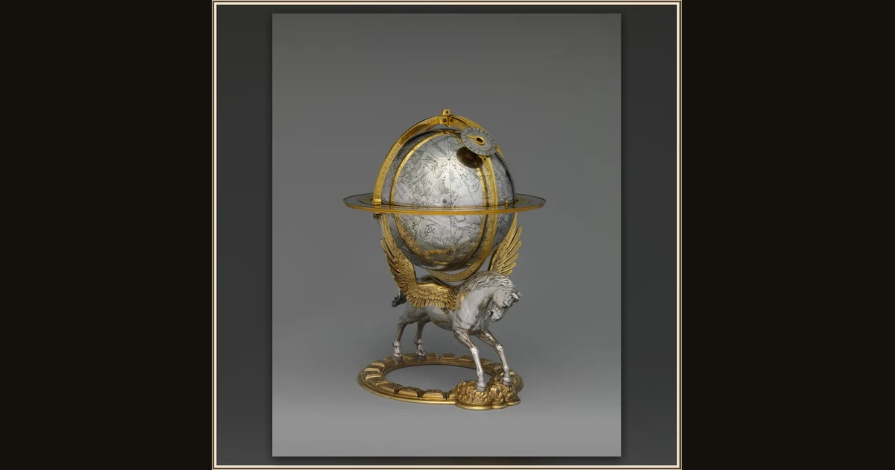

Celestial globe with clockwork
Gerhard Emmoser · 1579 · met
A silver celestial globe engraved with the constellations, held by a winged horse: a Renaissance image of the spherical heaven over which the stars, the heavenly gods, are distributed (40a) Explore its place in Plato's Dialogues, Timaeus, section 103.